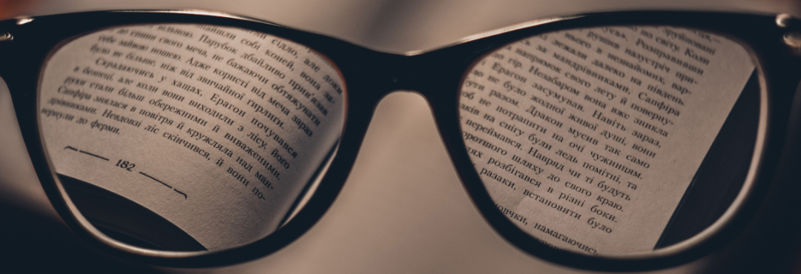

Advertentie:
Je hebt dit gedeelte al gedaan.
Encryptie controleren
Advertentie:

Het internet is niet altijd goed beveiligd. Wij gaan jouw leren hoe jij kan herkennen of een website veilig is en hoe je ervoor kan zorgen dat jij niet gehacked kan worden. Het is zeker belangrijk om dit te doen, want anders loop je het risico dat al jouw foto's, video's en wachtwoorden op het internet voor iedereen te zien worden.
Advertentie:
Hoe heet de technologie die voor een beveiligde verbinding zorgt?
Wij gebruiken deze technologie ook!
Je hebt het goede antwoord gekozen!
Je hebt het verkeerde antwoord gekozen, je moet weer terug naar het begin.....
Beschrijving
Je kan nu herkennen of een website veilig is, en welke websites dat niet zijn. Om je te herinneren, https zorgt voor de veilige verbinding. Ga nu zelf op onderzoek uit en probeer niet beveiligde websites te zoeken. Wil je meer weten over hoe https werkt? Kijk de linkjes hieronder voor meer
Linkjes
Kan jij zelf websites vinden zonder https?
Websites zonder https versturen al je gegevens, zonder beveiliging. Dit is helemaal niet veilig, en je kan dus niet zomaar daar je wachtwoord in vullen. Bekijk zelf of jij websites kan vinden die deze beveiling niet gebruiken.
Bijv.
http://sdaf.org/
http://www.marca.com/Vul dan hier het jouw antwoord in:
Je kan nog niet verder, omdat je nog geen antwoord hebt ingevuld.
Antwoord
Jouw antwoord was . Veel antwoorden zijn (helaas) mogelijk, waaronder http://hvc.nl.
Je kan zelf zien of een website een beveiligde verbinding heeft door te kijken naar wat er in de url staat. Als er https staat dan is de verbinding beveiligd is. Als je een les hebt van een docent hebt die een website beheerd, zeg dan tegen die docent dat een beveiligde verbinding nodig is.
Zeker als je les hebt van Mr. Oppelaar, steek dan op dit moment je vinger op en stel hem deze vraag: "Waarom maakt de website van het hvc nog gebruik van verouderde en onveilige technieken?". Als hij niet snapt wat je bedoelt, zeg dan dat je niet het slotje bovenaan ziet staan en de website dus onveilig is. Kijken wat zijn reactie is.
Hoe veilig is jouw wachtwoord?
Test zelf hoe veilig jouw wachtwoord is, of maak een beter wachtwoord......
Sterkte:
Vul iets in...Einde van deze les
Je hebt deze les geleerd dat je nooit gebruik moet maken van een onbeveiligd wifi netwerk. Tenzij je gebruik maakt van een VPN. Ook heb je geleerd dat je altijd moet kijken of een website veilig is met behulp van het slotje bovenaan. Als je les hebt van meneer Oppelaar en hem de aanbevolen vraag durfde te stellen, hopelijk heb je daar ook nog wat van geleerd.
Dit was de laatste les over encryptie. Je kan hierna een toets maken, zodat je kan zien hoe goed je alles hebt geleerd.